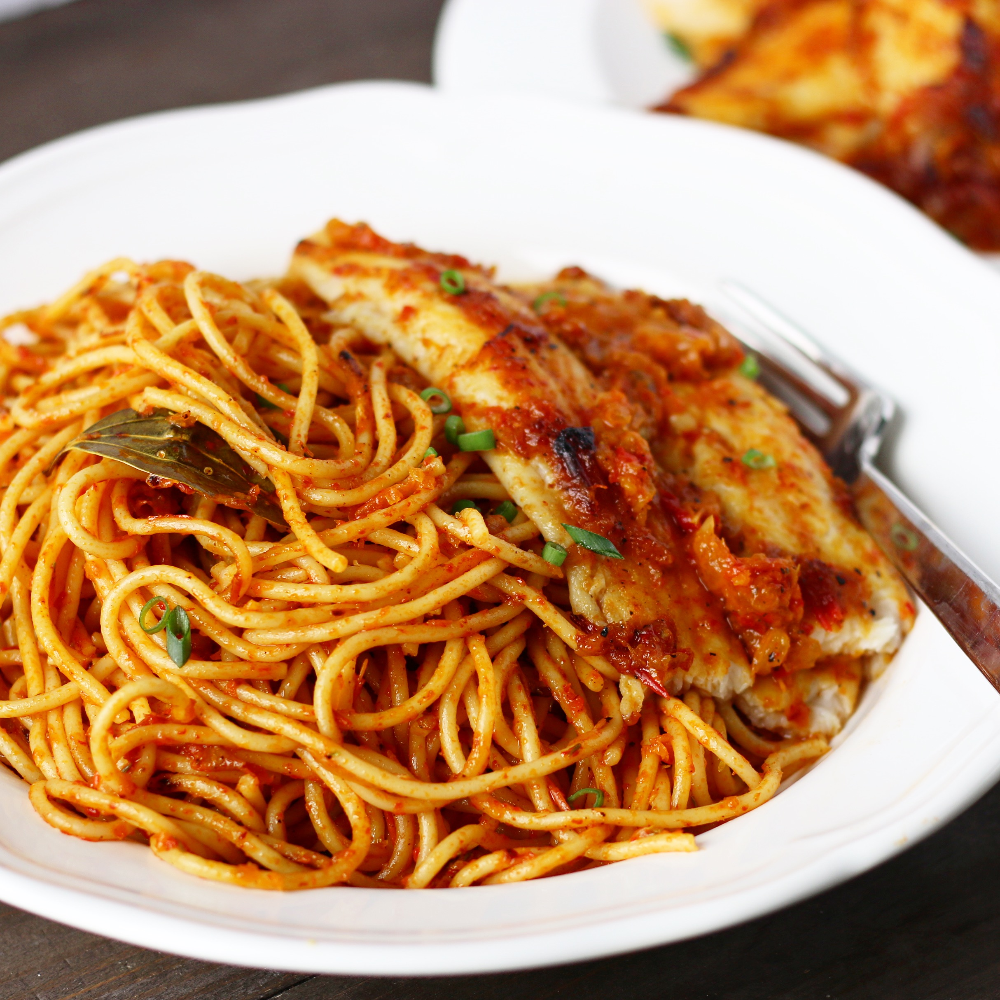

Nigerian Jollof Spaghetti

Description
Nigerian Jollof Spaghetti, also known as "Spaghetti Jollof," is a spicy,
savory pasta dish cooked in a rich tomato and pepper sauce infused with
classic West African flavors. Similar to Jollof rice, the base is made
with blended tomatoes, red bell peppers, onions, and spices, but instead
of rice, spaghetti is added and simmered in the sauce until fully coated
and flavorful.
Ingredients
- Spaghetti – 300–400g
- Tomatoes (fresh or canned) – 3–4 medium
- Red bell pepper – 1 large
- Onion – 1 large
- Garlic – 2 cloves
- Scotch bonnet (or chili) – 1 (optional for heat)
- Tomato paste – 1–2 tablespoons
- Vegetable oil – 1/4 cup
- Chicken or vegetable stock – 1–2 cups
- Thyme – 1 teaspoon
- Curry powder – 1 teaspoon
- Salt – to taste
- Black pepper – to taste
- Seasoning cubes – to taste
Steps
-
Blend tomatoes, red bell pepper, half the onion, garlic, and scotch
bonnet into a smooth mixture.
-
Break spaghetti in half and parboil for about 5–6 minutes (not fully
cooked). Drain and set aside.
-
In a pot, heat oil and sauté the remaining chopped onions. Add tomato
paste and fry for 2–3 minutes.
-
Pour in the blended mixture and cook until thickened and the oil
separates (10–15 minutes).
-
Add thyme, curry powder, seasoning cubes, salt, and pepper. Stir in the
stock and bring to a light simmer.
-
Add the parboiled spaghetti into the sauce, mix well, and cover. Let it
cook on low heat until the spaghetti is fully done and the sauce is
absorbed (about 10 minutes).
-
Stir occasionally to prevent burning. Serve hot with fried plantains,
eggs, or grilled meats.
Home